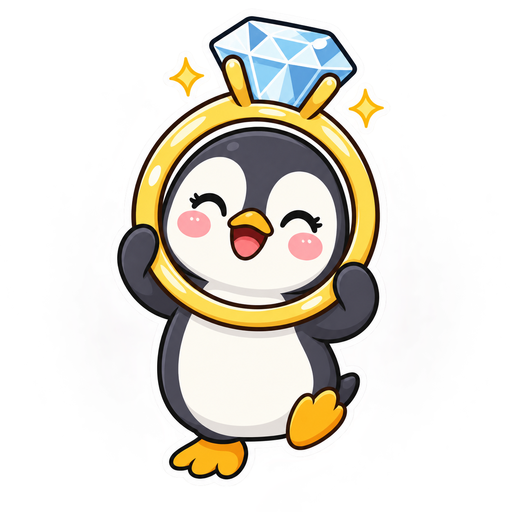

Ring Ring Rika ($RING) is a Solana-based meme coin built around a simple emotional premise: when love enters the chat, the community brings the ring emoji, the jokes, and the zero chill.
The project’s tagline captures its tone:
Two hearts, one ring, zero chill—love just entered the chat.
The meme theme comes from the announcement represented by the phrase “三浦璃来官宣订婚”, referring to Rika Miura announcing an engagement. Ring Ring Rika transforms that cultural moment into a lightweight, community-driven internet meme concept. It is not presented as an official project of Rika Miura, nor does it claim endorsement, partnership, or participation from her or any related party.
$RING is launched on Solana through the pump.fun bonding curve fair launch model. The token has a fixed supply of 1,000,000,000 $RING, with no presale and no team allocation. Its purpose is cultural and communal: to give people a shared ticker, visual identity, and playful online space for celebrating romance-themed memes.
The project does not promise utility, returns, price appreciation, exchange listings, or commercial outcomes. Its value proposition is limited to participation in a meme community and the entertainment of the culture built around it.
Contract address: 6S3HGx45XeY8xAa61oLpdUeAbULyuW2RShNcMkPGUmdH
Chain: Solana
Official site: https://auto-crypto.github.io/ring-ring-rika-drill/
Every strong meme begins with a recognizable moment, and Ring Ring Rika starts with a headline-shaped idea: Rika Miura announced an engagement. The emotional ingredients are immediate and internet-friendly—two people, one ring, public excitement, and an audience ready to react with affection, jokes, edits, emojis, and dramatic levels of enthusiasm.
The “ring ring” concept works on several levels. A ring is the central symbol of an engagement, while “ring ring” also sounds like a notification, a phone call, or the arrival of a message that changes the mood of the entire chat. In Ring Ring Rika lore, the ring is not quiet. It rings through group chats, timelines, comment sections, and community posts. It is a notification that romance has entered the feed.
The “zero chill” part of the tagline gives the project its personality. Ring Ring Rika is intentionally playful rather than solemn. It takes the universal language of celebration and turns up the volume: more hearts, more rings, more reaction images, and more enthusiastic commentary than anyone strictly needs.
The project is a meme interpretation, not a biography or news outlet. It does not attempt to document private details, speculate about personal matters, or speak on behalf of Rika Miura. The cultural reference is used as the starting point for a community theme. Participants are encouraged to keep the tone respectful, distinguish public information from speculation, and remember that real people exist behind internet trends.
At its core, Ring Ring Rika is about the way online communities gather around a shared emotional signal. One announcement can inspire a common vocabulary. A ring emoji can become a banner. A phrase can become a ticker. A playful idea can become a place where people create and share their own interpretations.
The project’s lore is therefore intentionally open-ended:
$RING is the tokenized symbol of that meme language on Solana. It is not designed as a claim on a person, event, organization, or future financial result. It is simply the community’s chosen token for a romance-themed internet culture experiment.
Ring Ring Rika has a fixed total supply of:
1,000,000,000 $RING
The supply is intended to remain easy to understand and straightforward to communicate. There is no stated supply expansion mechanism in the project brief. Holders and observers should independently verify token information using reliable on-chain tools and the official contract address.
$RING launches on Solana through the pump.fun bonding curve fair launch model.
The project is structured with:
The fair-launch format is intended to make the initial token distribution public and transparent within the mechanics of the launch platform. It does not remove market risk, guarantee equal access, or ensure any particular distribution outcome. Participants should understand the mechanics of pump.fun and the relevant bonding curve before interacting with the token.
6S3HGx45XeY8xAa61oLpdUeAbULyuW2RShNcMkPGUmdHUsers should verify the contract address carefully before making any transaction. Copycat tokens, impersonation accounts, misleading links, and unofficial social profiles may appear around any meme project. The contract address shown above is provided for identification, not as a guarantee of safety or performance.
$RING is a meme coin. The project does not describe staking, governance, revenue sharing, access rights, products, services, or other guaranteed utility. No return, price target, liquidity level, exchange listing, or future development outcome is promised.
The token’s intended role is cultural participation. People may use the ticker and related imagery to create memes, discuss the theme, and participate in community activities. Any additional use or community tradition that emerges should be understood as informal and subject to change.
The Ring Ring Rika roadmap focuses on cultural and community milestones rather than financial targets. It does not include price predictions, exchange-listing promises, return objectives, or claims of guaranteed adoption.
The first phase establishes the project’s identity and public reference points.
Community milestones include:
The goal of Phase 1 is clarity: people should understand what $RING is, where it exists, and what kind of culture it is intended to support.
The second phase focuses on participation and creative expression.
Community milestones may include:
This phase is about discovering which jokes, formats, and symbols the community naturally adopts. No particular content format is guaranteed to become official or permanent.
The third phase develops recurring cultural activities.
Possible milestones include:
Any such activity is cultural rather than financial. Participation does not create ownership rights, guaranteed recognition, or entitlement to tokens or rewards unless separately and explicitly announced.
The fourth phase is the long-term continuation of the Ring Ring Rika culture.
Community milestones may include:
Ring Ring Rika is designed to remain flexible. Memes change quickly, and the community may develop traditions that are not foreseeable at launch. The roadmap therefore describes cultural direction rather than a fixed schedule or a guarantee of completed deliverables.
Ring Ring Rika is a community concept first. Its identity comes from shared participation: people recognizing the ring, reacting to the announcement theme, and adding their own creative spin.
The culture is built around four simple ideas:
The ring represents a public moment of romance and the instant recognizability of a shared meme.
“Zero chill” means enthusiasm, not hostility. The community should be energetic without becoming abusive, invasive, or disrespectful.
Memes, illustrations, slogans, and edits are welcome. False claims of endorsement, fake official accounts, and misleading statements about Rika Miura or any other person are not part of the project’s intended culture.
Community posts are not automatically official information. Participants should check the official site, contract address, and on-chain details independently.
The community may express itself through heart emojis, ring imagery, celebratory language, humorous “notification received” posts, and other formats that fit the theme. These expressions are cultural artifacts, not promises of a product roadmap or financial benefit.
A healthy meme community also makes room for disagreement and caution. Not every participant will share the same interpretation of the theme, and no one should feel pressured to buy, hold, trade, or promote $RING. Participation can simply mean enjoying the jokes, observing the culture, or sharing creative work without acquiring tokens.
The project does not claim partnerships, endorsements, exchange listings, or institutional support. Any announcement that suggests otherwise should be treated as unverified unless it is supported by a clearly identified official source.
Buying, holding, or trading $RING involves substantial risk. Meme coins can be highly volatile, illiquid, speculative, and heavily influenced by attention, sentiment, technical conditions, and broader market activity. A token may lose some or all of its value, and participants may be unable to sell at a desired price.
The pump.fun bonding curve fair-launch structure does not eliminate risk. Bonding curve mechanics, transaction fees, slippage, liquidity conditions, smart contract behavior, wallet security, and network congestion can all affect a transaction. Solana network conditions may also influence transaction timing, costs, or execution.
Digital assets are vulnerable to scams and operational threats. Users should watch for fake websites, counterfeit tokens, phishing links, malicious wallet requests, impersonation accounts, and misleading promotional material. Always verify the contract address and use secure wallet practices. Never share a private key or seed phrase.
The absence of a presale and team allocation does not guarantee fairness, safety, liquidity, decentralization, or a particular holder distribution. A fair launch is a launch format, not a promise about outcomes.
The project may not develop beyond its initial meme concept. Community activity may decline, content may stop, information may become outdated, or the official site may change. Nothing in this whitepaper guarantees future updates, communications, integrations, listings, utility, or continued operation.
Participants are responsible for complying with the laws and regulations applicable to them. They should conduct their own research, assess their personal circumstances, and consult qualified professional advisers where appropriate.
Ring Ring Rika ($RING) is an entertainment meme coin with no intrinsic value expectation. It is not an investment product, security, financial instrument, or offer of financial advice. No returns, profits, price appreciation, liquidity, listings, partnerships, endorsements, utility, or future development are promised. The project is not affiliated with, endorsed by, or sponsored by Rika Miura or any related person or organization. Participation is voluntary and carries risk, including the possible loss of all funds used. This document is for entertainment and informational purposes only and is not financial advice.